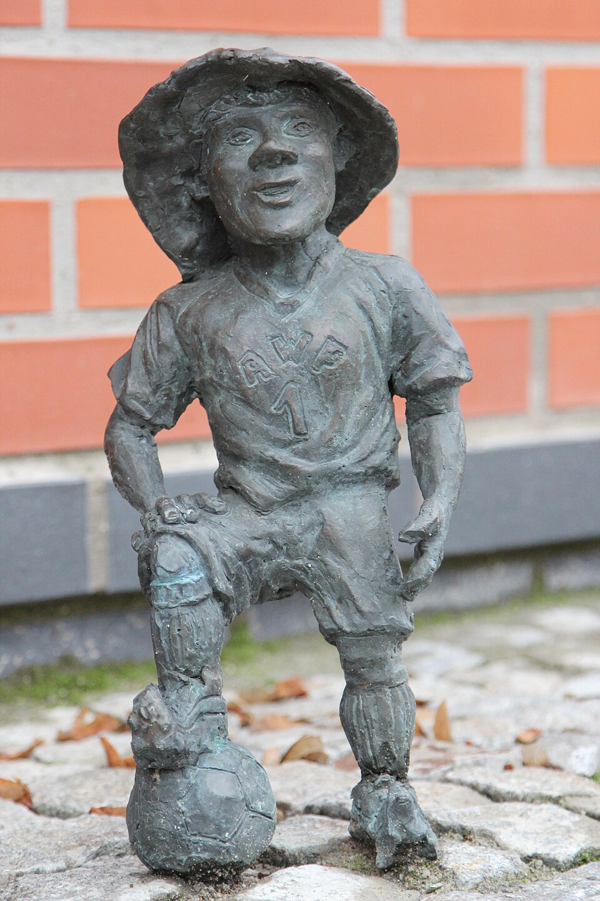
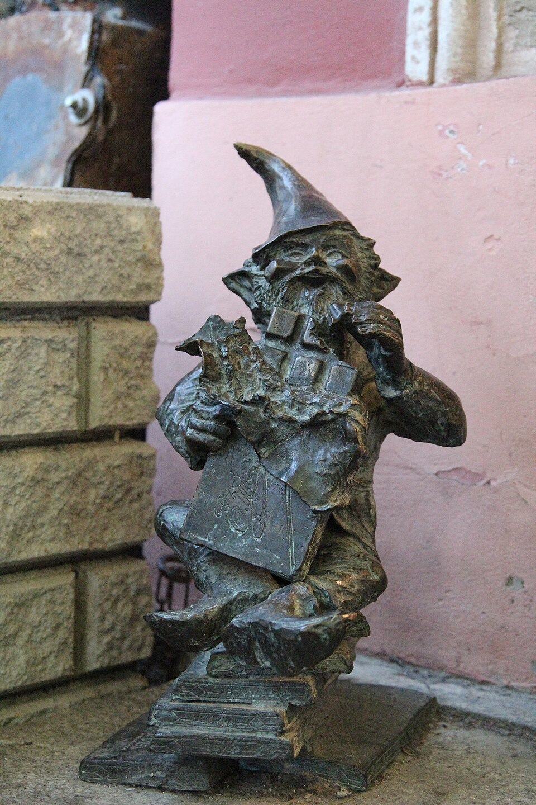
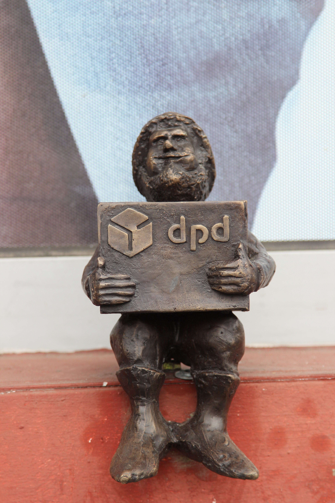
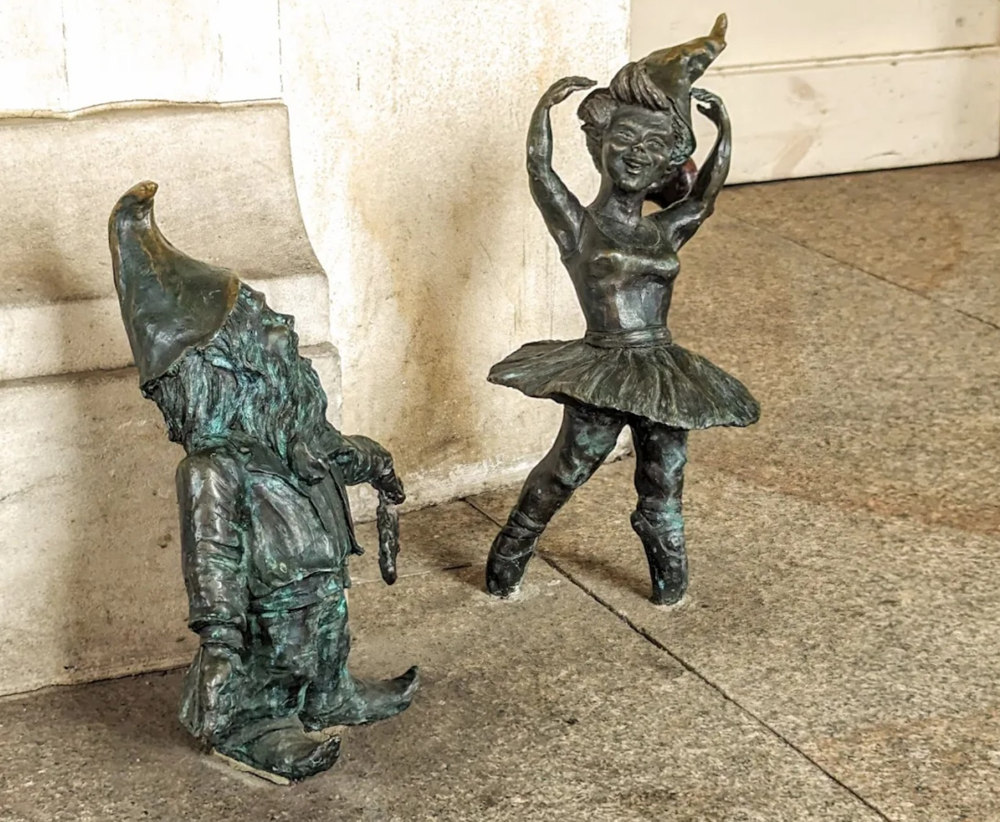

Opisy TOP 5 krasnali
Krasnal Trener
Na szczęście przed nowym budynkiem AWF pojawił się Trener. Za dnia podpatruje, jak ćwiczą studenci uczelni. A wieczorami, gdy boisko opustoszeje, trenuje tam swoją małą kadrę. Ponoć daje jej niezły wycisk.

Krasnal Wedelek
Dopiero zdążył pojawić się na wrocławskim rynku, tuż przy Pijalni Czekolady E.Wedel, a już zyskał wielką sympatię. Zawsze uśmiechnięty i pełen prawdziwej, dziecięcej radości. Wedelka zazwyczaj spotkasz z ukochaną tabliczką czekolady w ręku, którą sam potrafi zjeść w mgnieniu oka.

Krasnal Orkiestra
Nic szybciej nie zwoła krasnej społeczności, niż sygnał zagrany na trąbce. Nie może też zabraknąć muzyki do tańca – mali wrocławianie uwielbiają pląsy, muszą tylko uważać, żeby nie przydeptywać sobie bród.

Krasnale Paczuś
Jeśli jakiś krasnal nie lubi lub nie chce czekać w skrzacim domku na krasnala Kurierka, może odebrać swoją paczkę osobiście od krasnala Paczusia w punkcie DPD Pickup.

Krasnal Śpiewak
Postać Krasnala Śpiewaka przedstawia śpiewającego artystę, zwróconego twarzą do stojącej obok niego tancerki, jednocześnie spoglądającego na wchodzących do Opery widzów.

Źródło: visitwroclaw.eu